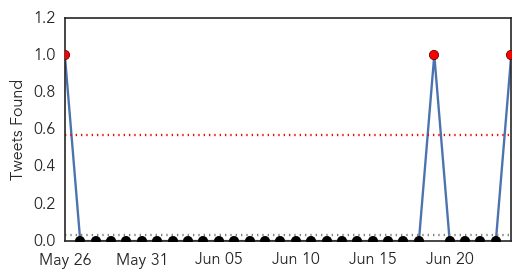

30 Day Trends
Web: 0 alerts, 0 warnings
Twitter: 3 alerts, 0 warnings
Top Articles:
- 0.995
- Human infection with avian influenza A(H7N9) virus – update
- 0.980
- UF part of research team that finds equine influenza virus in camels
- 0.979
- Research Team Finds Equine Influenza Virus in Camels, Humans May Be Next
- 0.806
- Today's stories from newspapers in London
- 0.780
- Inside Toronto > Home
- 0.523
- U.S. FDA cites GSK flu vaccine plant for quality violations
- 0.523
- UPDATE 2-U.S. FDA cites GSK flu vaccine plant for quality violations
Top Tweets:
- 0.507
- EQA for influenza virus detection isolation & culture for European Reference Laboratory Network for Human Influenza http://t.co/Y9fYOoEfCb
Web/News Articles

Tweets
Article Locations

Article Confidences